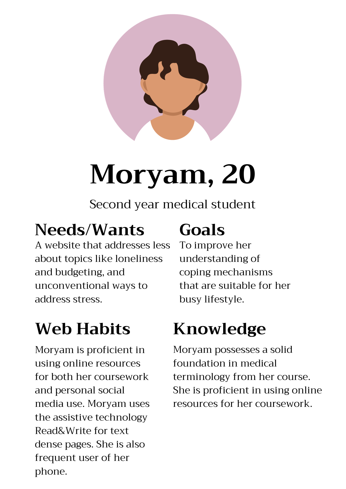
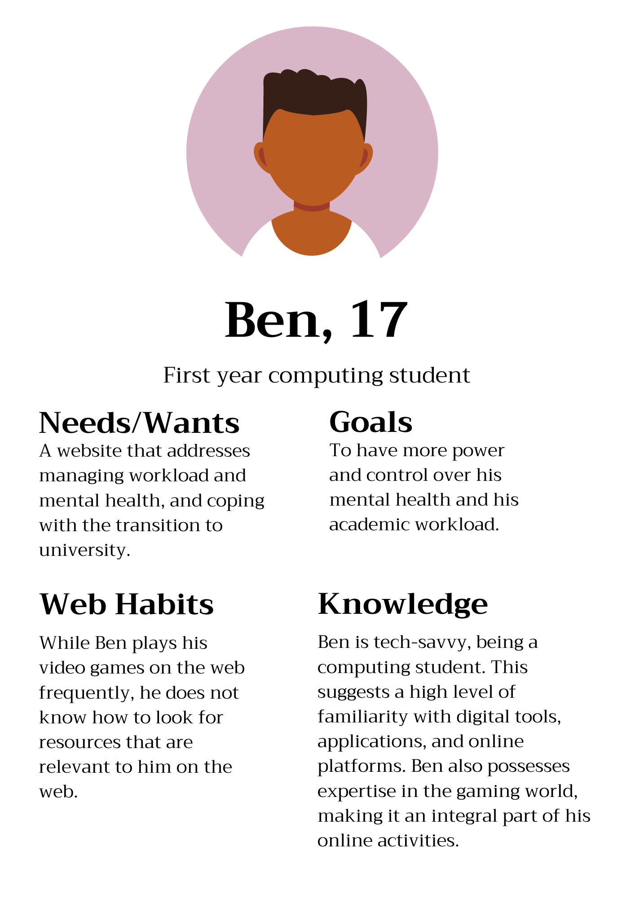
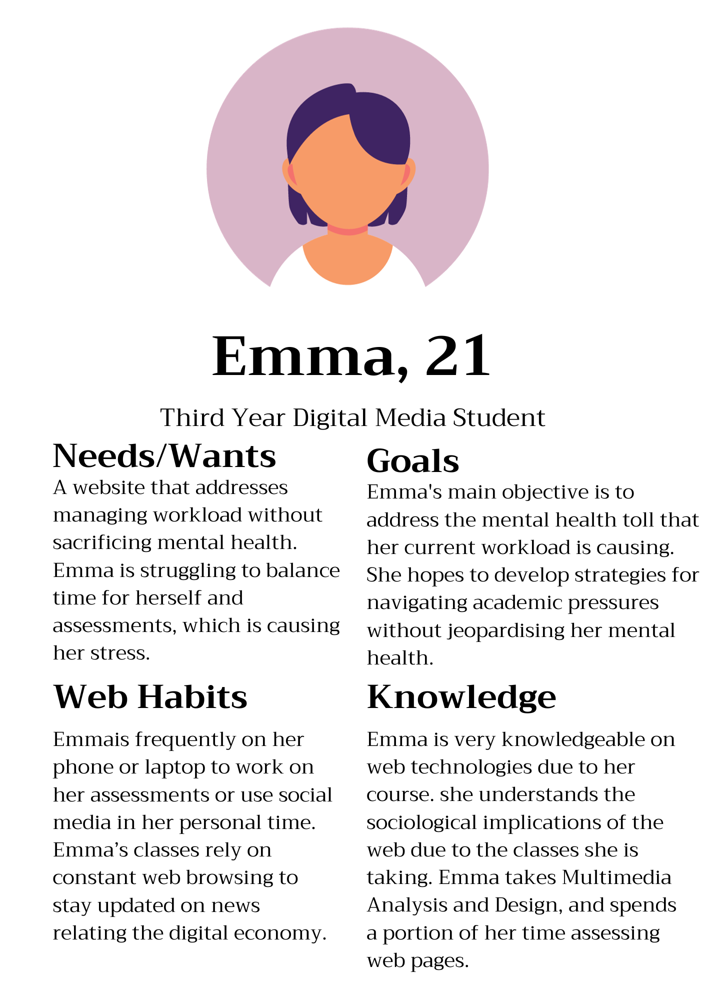
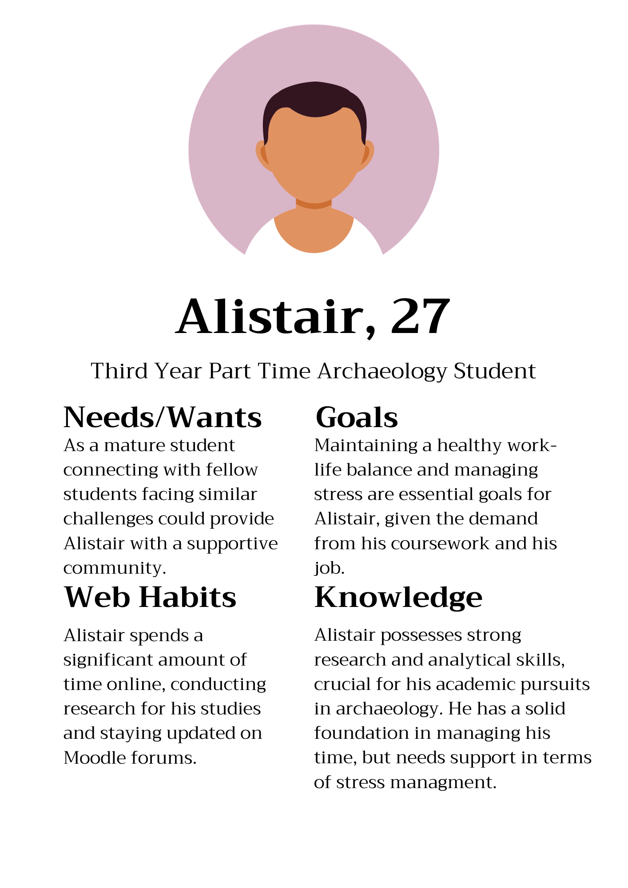
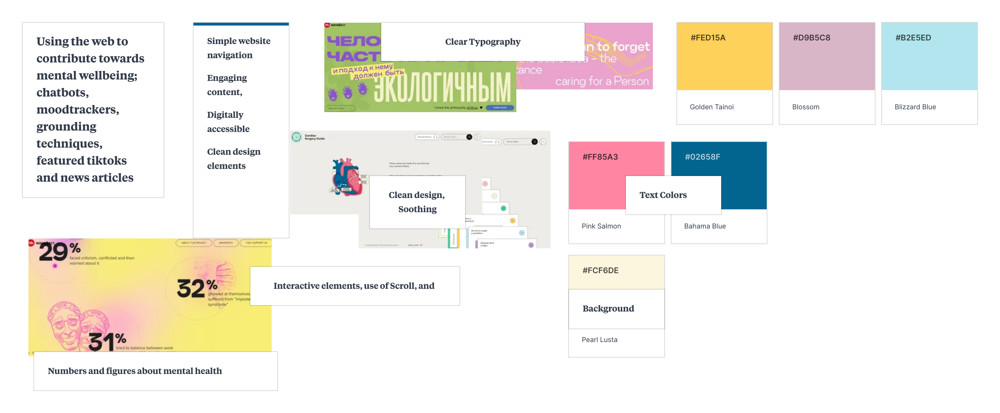

| Audience Characteristic | Rationale |
|---|---|
| Age | 18 - 28 |
| Gender | Mixed |
| Language Proficeincy | Fluent in English |
| Education Level | University Students |
| Knowledge of the Topic | Low |
| Audience Action | Use tools for maintaing wellbeing and understand the importance of recognizing early signs of poor mental health |




| Stage 1 | Stage 2 | Stage 3 | Stage 4 | Stage 5 | |
| Objectives | Evaluate the credibility and relevance of available wellness resources | Explore curated content on various wellness topics | Participate in a wellness exercise | Receive personalized wellness recommendations | Engage with the community forum and employ the coping mechanisms in everyday life and assess e-health sources effectively |
| Needs | To understand the purpose of the wellness website | Learn about holistic wellness practices | Reflect on personal wellness journey | Access tailored guidance for improving well-being | Connect with like-minded individuals for mutual support and understanding how to apply the information moving forward |
| Feelings | Curiosity and openness to learning | Interest and engagement with the content | Reflection and increased self-awareness | Encouragement to make positive changes to take charge of mental wellbeing | Sense of belonging to a community and empowerment |
| Barriers | Understanding the navigation of wellness resources | Interpreting the content | Technical challenges in completing the interactive exercises | Understanding and implementing personalized wellness recommendations | Effective participation in the wellness community forum and applying information in daily practices |
My evaluation of the NHSInform website highlights several important considerations for tailoring my website to my chosen audience, particularly those who are younger and familiar the web.

Reflecting on my journey of exploring health websites and design thinking, I am starting to envision a better direction of my project. Exposure to official health websites (NHSInform) helped me refine my ideas. I want to create a website that prioritizes user-friendliness and simplicity. One key takeaway from analyzing websites like the NHS is I want to avoid an overload of text-heavy content. Instead, I'm reserving text-heavy sections specifically for users seeking detailed information with potentially links to external sources for that kind of information. My understanding of design principles has led me to explore inspiration; that way I can hone my vision. I've looked at websites featured on CSS Design Awards. The web designs helped me understand what kind of design I find my project to align with. This has helped me in adding elements to my board, which is an ongoing project. I am aimin to create a website that is both visually engaging and informative while avoiding unnecessary complexity. I'm excited to continue learning and refining my project as it progresses.